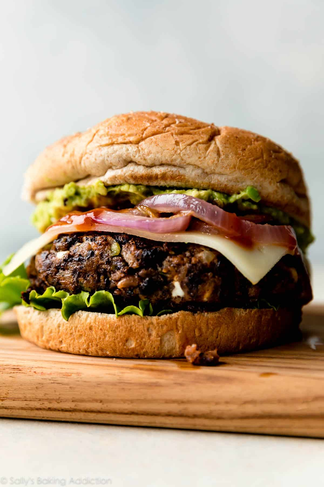

Home
Black Bean Burgers

Description
Whatever you've thought in the past about black bean burgers is wrong. Trust us on this one! Follow this recipe to a T, and let's see if we can't change your mind!
These hearty gems are juicy, spicy, satisfying, and deliciously easy on the wallet!
Ingredients
- 2 (14 ounce) cans black beans, drained, rinsed, and patted dry
- Tbsp olive oil
- 3/4 cup finely chopped bell pepper
- 1 cup finely chopped yellow onion
- 3 garlic cloves, minced
- 1 1/2 tsp ground cumin
- 1 tsp chili powder
- 1/2 tsp garlic powder
- 1/4 tsp smoked paprika
- 1/2 cup bread crumbs or oat flour
- 1/2 cup feta cheese (optional)
- 2 large eggs
- Worchestershire sauce
- 2 Tbsp ketchup, mayo, or bbq sauce
- pinch salt and pepper
Instructions
- Preheat oven to 325°F (163°C). Spread beans evenly onto a lined baking sheet and bake for 15 minutes until slightly dried out.
- Meanwhile, sauté olive oil, chopped pepper, onion, and garlic over medium heat until peppers and onions are soft, about 5-6 minutes. Gently blot some of the moisture out. Place in a large bowl or in a food processor with the remaining ingredients (cumin, chili powder, garlic powder, smoked paprika, bread crumbs, cheese, eggs, worcestershire, ketchup, salt, and pepper). Stir or pulse everything together, then add the black beans. Mash with a fork or pulse the mixture, leaving some larger chunks of beans.
Form into patties, about 1/2 cup (130g) of mixture each, about 3/4-inch thick.- To bake: Place patties on a parchment paper-lined baking sheet and bake at 375°F (191°C) for 10 minutes on each side, 20 minutes total. To grill: Place patties on greased aluminum foil and grill 8 minutes on each side. Heat temperature is personal preference as all grills differ. Generally, black bean burgers should grill on medium-high heat about 350°F (177°C) – 400°F (204°C).
- Serve with your favorite toppings. Store leftovers in the refrigerator for up to 5 days.
Notes
- Serve with your favorite toppings. Store leftovers in the refrigerator for up to 5 days.
- Vegan & Vegetarian: Worcestershire sauce is not vegan or vegetarian. For vegetarian burgers, leave it out or replace with your favorite vegetarian condiment such as BBQ sauce. For vegan burgers, make the following 3 changes: (1) leave out the Worcestershire sauce or replace with your favorite vegan condiment such as BBQ sauce, (2) leave out the cheese, and (3) replace the eggs with 1/3 cup mashed sweet potato.